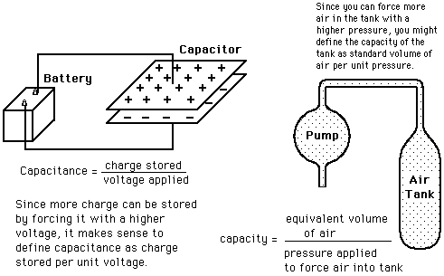
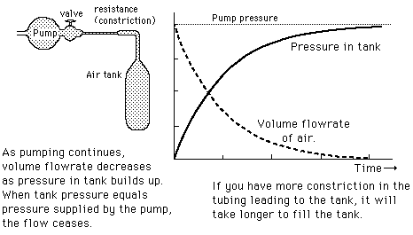

Air Tank Analogy for a Capacitor

Capacitor
Analogy for charging capacitor
Index
DC Circuits
Capacitor Concepts
HyperPhysics
*****
Electricity and Magnetism
R Nave
Go Back
Airtank Analogy to Charging a Capacitor

Airtank analogy for capacitor
Charging a capacitor
Index
DC Circuits
Capacitor Concepts
HyperPhysics
*****
Electricity and Magnetism
R Nave
Go Back